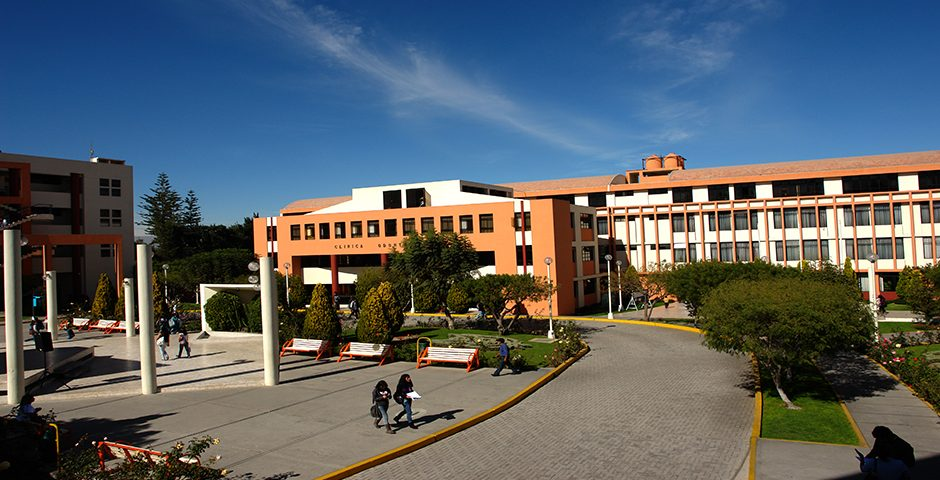

La UCSM fue fundada el 6 de diciembre de 1961, por el religioso de la Sociedad de María R.P. William Daniel Morris Christy, quien nació el 4 de noviembre de 1910 en San Luis, Misuri; pero se nacionalizó "arequipeño" desde que en 1960 vino a convertir en realidad su sueño de una Universidad Católica de Santa María para Arequipa. El padre Morris logró del gobierno del Dr. Manuel Prado el D.S. Nro. 024 del 6 de diciembre de 1961, el cual creó la universidad, la cual pasó a constituirse como la segunda universidad privada más antigua del Perú. Gracias a la valiosa colaboración del Arzobispo de Arequipa, Monseñor Leonardo José Rodríguez Ballón, la UCSM inició sus labores en la Casona de la calle Santa Catalina 410 el 9 de abril de 1962 con dos secciones de la Facultad de Letras y ocho maestros fundadores. Merced al apoyo de Southern Perú, IPC, Banco de Crédito, Gobierno Alemán y otros mecenas, la Universidad se traslada de la Casona de Santa Catalina a su local actual (sede central) Urb. San José s/n, Umacollo; donde cuenta con un campus de 75,600 m²; el edificio "Las Esclavitas" donde funciona la Administración Central y la Escuela de Postgrado, ubicado en la calle Samuel Velarde 320 Umacollo con una extensión de 3,056 m²; cuenta además con: 55 hectáreas de tierras agrícolas en el Proyecto Majes; el Fundo Chapioco ubicado en Alto Sumbay del distrito de Yanahuara con 661 hectáreas, una extensión de 46 hectáreas en Huasacahe "Fundo la Banda", Casona en Ugarteche 306 Selva Alegre; La Casa de la Cultura (La Merced 110), la Casa del Corregidor en La Merced 207, en Ciudad de Dios, casas en Samuel Velarde.
